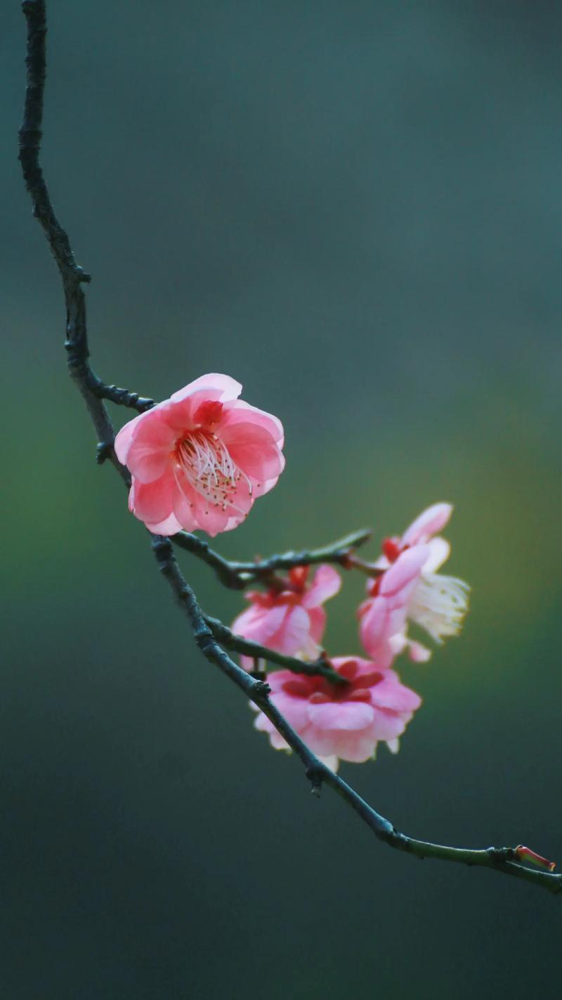
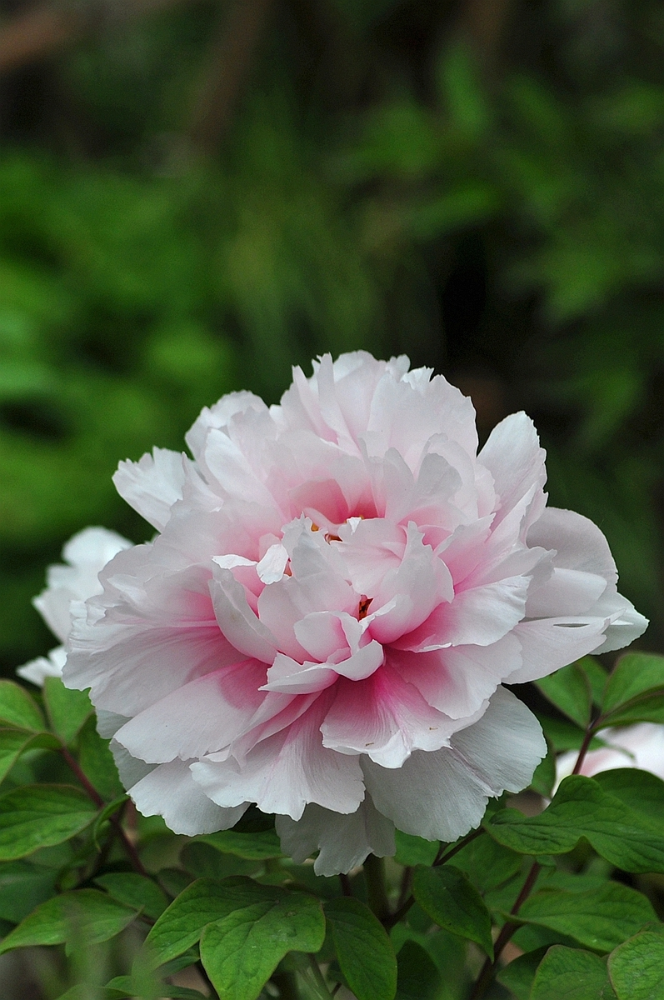
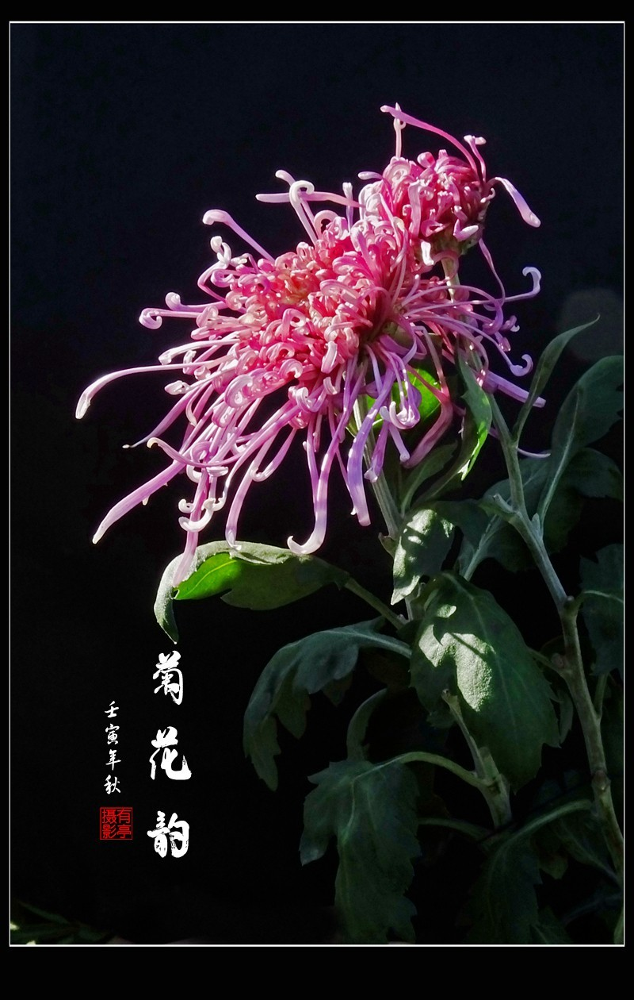
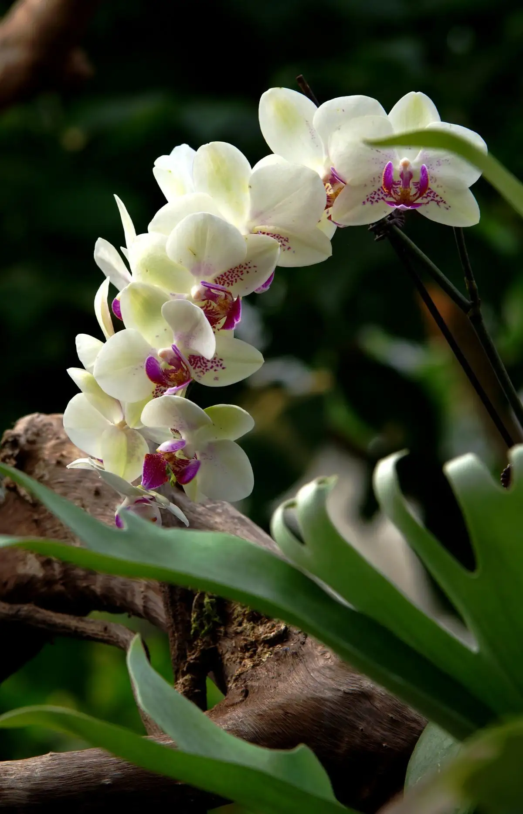
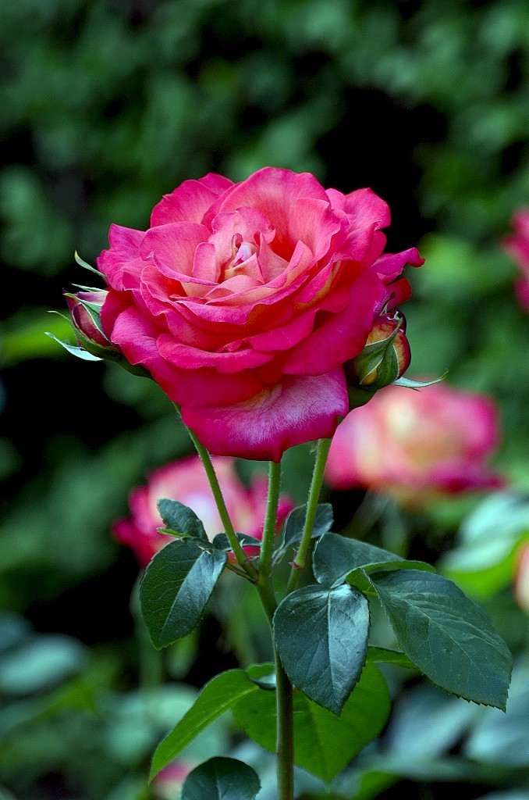
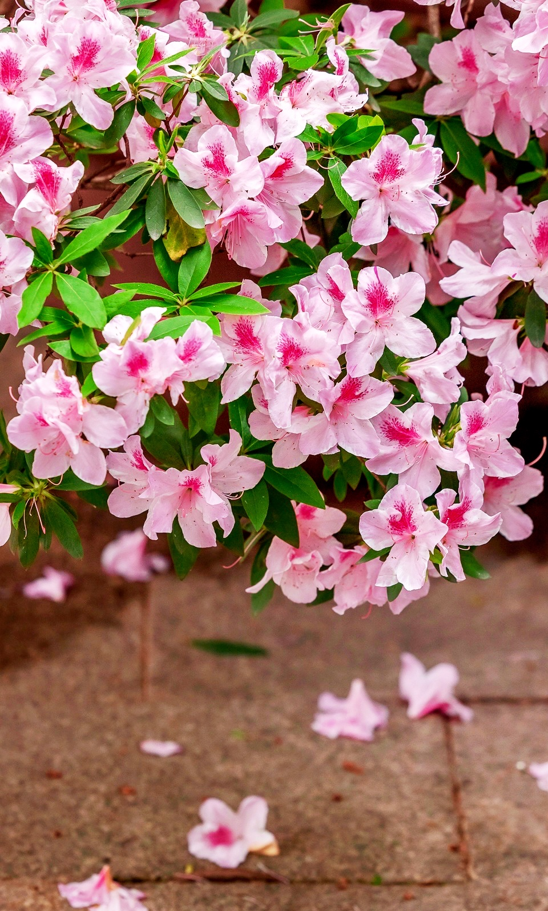
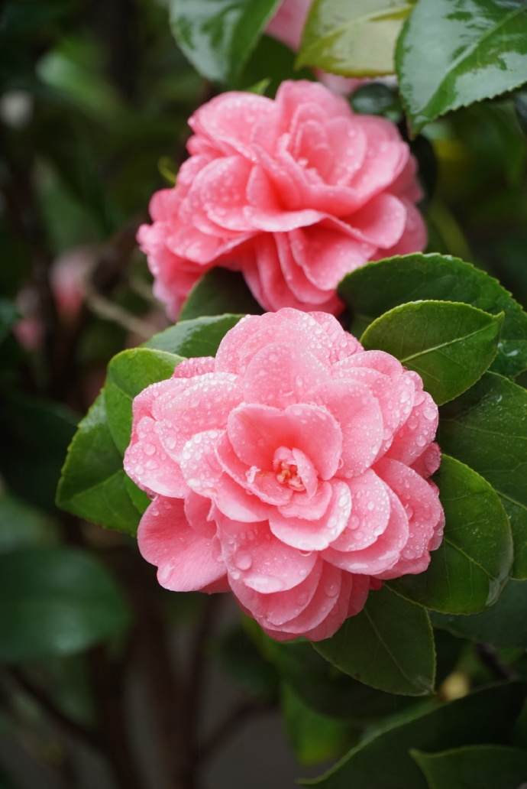
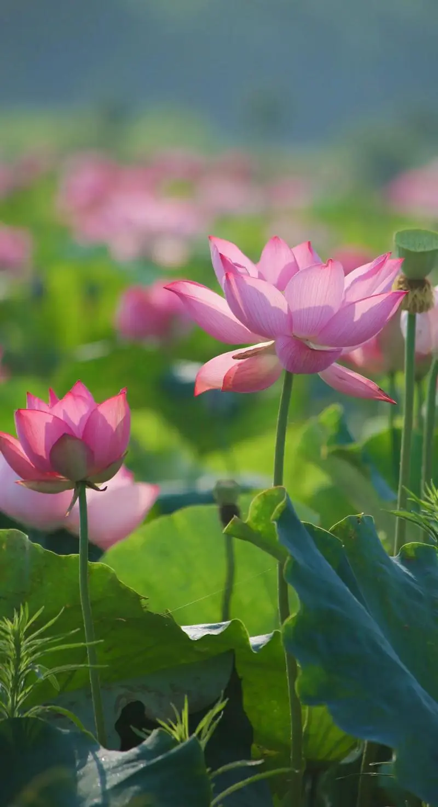
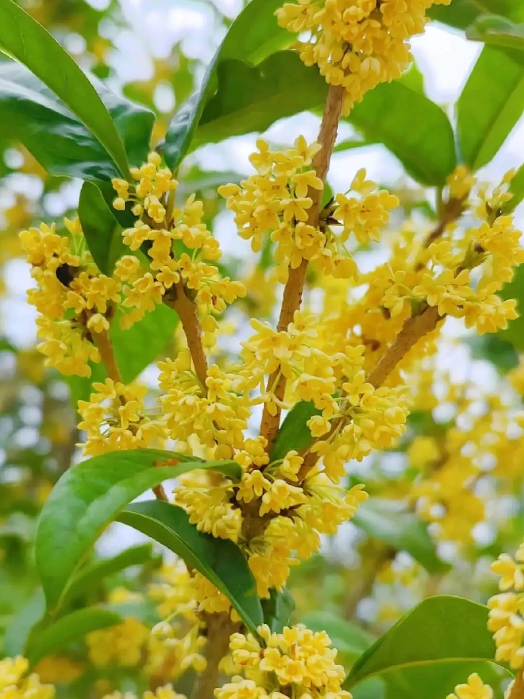
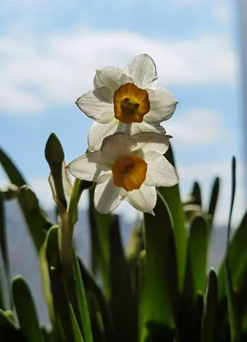

1梅花
梅（Armeniaca mume Sibe.var.mume）：蔷薇科、李亚科，李属木本植物。小乔木，稀灌木，高4-10米；树皮浅灰色或带绿色，平滑；小枝绿色，光滑无毛。叶片卵形或椭圆形，叶边常具小锐锯齿，灰绿色。花单生或有时2朵同生于1芽内，直径2-2.5厘米，香味浓，先于叶开放；花萼通常红褐色，但有些品种的花萼为绿色或绿紫色；花瓣倒卵形，白色至粉红色。果实近球形，直径2-3厘米，黄色或绿白色，被柔毛，味酸；果肉与核粘贴；核椭圆形，两侧微扁。花期冬春季，果期5-6月。
梅花是中国十大名花之首，与兰花、竹子、菊花一起列为四君子，与松、竹并称为“岁寒三友”。
在中国传统文化中，梅以它的高洁、坚强、谦虚的品格，给人以立志奋发的激励。在严寒中，梅开百花之先，独天下而春。梅花色白雅洁，在冬末春初开花，枝干苍古，植为盆景、庭木尤富观赏价值。
2牡丹花
牡丹花，中药名。为毛茛科芍药属植物牡丹Paeonia suffruticosa Andr.的花。全国栽培甚广，早已引种国外。常用于妇女月经不调，经行腹痛。
落叶灌木。茎高达2米；分枝短而粗。叶通常为二回三出复叶，偶尔近枝顶的叶为3小叶；顶生小叶宽卵形，长7-8厘米，宽5.5-7厘米，3裂至中部，裂片不裂或2-3浅裂，表面绿色，无毛，背面淡绿色，有时具白粉，沿叶脉疏生短柔毛或近无毛，小叶柄长1.2-3厘米；侧生小叶狭卵形或长圆状卵形，长4.5-6.5厘米，宽2.5-4厘米，不等2裂至3浅裂或不裂，近无柄；叶柄长5-11厘米，和叶轴均无毛。
花单生枝顶，直径10-17厘米；花梗长4-6厘米；苞片5，长椭圆形，大小不等；萼片5，绿色，宽卵形，大小不等；花瓣5，或为重瓣，玫瑰色、红紫色、粉红色至白色，通常变异很大，倒卵形，顶端呈不规则的波状；雄蕊长1-1.7厘米，花丝紫红色、粉红色，上部白色，长约1.3厘米，花药长圆形，长4毫米；花盘革质，杯状，紫红色，顶端有数个锐齿或裂片，完全包住心皮，在心皮成熟时开裂；心皮5，稀更多，密生柔毛。蓇葖长圆形，密生黄褐色硬毛。花期5月；果期6月。


3菊花
菊花是菊科菊属多年生草本植物。原产于中国，被视为日本的国花。 由某些野生菊经种间杂交演化而来的；茎多分枝，基部木质化；单叶互生，多卵圆形，边缘具粗大锯齿或深裂；头状花序，外围为舌状花，大小、形状变化很大，有平瓣、匙瓣等多种；中心为筒状花，常稀少或阙如；不同的瓣形，形成不同的花型、颜色、品种。花序下为总苞，舌状花多为雄性花，筒状花为两性花，雌蕊柱头两歧。
菊花原产于中国，唐宋时代，菊花经朝鲜传到日本，十七世纪传到欧洲，然后再传到美洲。菊花可按照花径、花期、花色等区别分类，历史上的菊花品种分类是以色为主的，清朝《广群芳谱》所记载的菊花品种就有300—400种。菊花为短日照植物，喜阳光，忌荫蔽，怕涝。
菊花是中国十大传统名花、花中四君子和世界四大切花之一，在中国古代菊花有许多精神内涵，比如菊花有“花中隐士”的雅称；又被誉为“十二客”中的“寿客”，有吉祥、长寿的含义；诗词中用菊花比喻品行高洁的人，象征不与世俗同流合污。菊花观赏价值较高，除盆栽或配植花坛外，常用作切花材料。部分菊花品种可供饮用，称为茶菊；味甘甜的菊苗及部分品种的花瓣，可作蔬菜。
4兰花
兰花（学名：Cymbidium ssp.）：是单子叶植物纲、兰科、兰属植物通称。附生或地生草本，叶数枚至多枚，通常生于假鳞茎基部或下部节上，二列，带状或罕有倒披针形至狭椭圆形，基部一般有宽阔的鞘并围抱假鳞茎，有关节。总状花序具数花或多花，颜色有白、纯白、白绿、黄绿、淡黄、淡黄褐、黄、红、青、紫。
中国传统名花中的兰花仅指分布在中国兰属植物中的若干种地生兰，如春兰、惠兰、建兰、墨兰和寒兰等，即通常所指的“中国兰”。这一类兰花与花大色艳的热带兰花大不相同，没有醒目的艳态，没有硕大的花、叶，却具有质朴文静、淡雅高洁的气质，很符合东方人的审美标准。在中国有一千余年的栽培历史。
中国人历来把兰花看作是高洁典雅的象征，并与“梅、竹、菊”并列，合称“四君子”。通常以“兰章”喻诗文之美，以“兰交”喻友谊之真。也有借兰来表达纯洁的爱情，“气如兰兮长不改，心若兰兮终不移”、“寻得幽兰报知己，一枝聊赠梦潇湘”。1985年5月兰花被评为中国十大名花之四。


5月季花
月季花（Rosa chinensis Jacq.）是蔷薇科属的常绿、半常绿低矮灌木。叶子为羽状复叶，表面深绿有光泽而叶背青白，且无毛面具有小托叶。花分单瓣和重瓣，重瓣色为深红且略似玫瑰。花色以红色为主，其他有白、黄、粉红、玫瑰红等。蔷薇果卵圆形或梨形，熟时红色。自然花期4月-9月。 月季花，以一年四季不分春、夏、秋、冬皆能见花而得名，又以其每月近乎开花一次而得名“月月红”“长春花”。
中国是月季花的原产地之一，在中国主要分布于湖北、四川和甘肃等省的山区。月季花适应性强，耐寒、耐旱，对土壤要求不严格，但以富含有机质、排水良好的微带酸性沙壤土最好。喜欢阳光充足，温暖湿润的气候，一般22~25℃为花生长的最适宜温度。月季花可利用播种与扦插进行栽培繁殖。
月季花的药用价植最早载于李时珍的《本草纲目》，他认为月季花具有“活血、消肿、傅毒”的功效，由于其活血化疲之功尤佳，故为妇科良药。月季栽培历史悠久，文化底蕴深厚，始于唐宋，兴于明清，发展于当代。
6杜鹃
杜鹃（Rhododendron simsii Planch.），是杜鹃花科杜鹃花属的落叶灌木，高2-5米，分枝多而纤细。叶为革质，常聚集生在枝端，呈卵形、椭圆状卵形或倒卵形，前端短逐渐变尖，叶子边缘微微反卷并带有细齿，上面深绿色，下面淡白色；花冠呈阔漏斗形、倒卵形，一般2-6簇生于枝顶，有玫瑰色、鲜红色或暗红色，花期4-5月，果期6-8月。
杜鹃广泛分布于欧洲、亚洲、北美洲，主产东亚和东南亚，在中国集中产于西南、华南地区，为中国中南及西南典型的酸性土指示植物。
杜鹃是中国三大自然野生名花之一，也是世界四大高山花卉之一，是重要的森林植被组成种类。 [9]杜鹃有较为广泛的药用价值，据《中药大辞典》等有关中医药文献记载：杜鹃花味酸甘，有活血调经之效，可治跌打损伤、风湿关节痛等疾病；因花冠鲜红色，可作花卉植物，具有较高的观赏价值；杜鹃还能监测有毒气体，当空气中有二氧化硫、一氧化氮时，杜鹃叶片会出现斑纹，边缘开始枯萎；杜鹃花寓意人们对生活热烈美好的感情，也象征着国家的繁荣富强和人民的幸福生活，故常被古人作诗，诗仙李白曾作《宣城见杜鹃花》。
注：杜鹃花也是杜鹃花属（Rhododendron）约960种植物的通称。


7茶花
茶花，山茶科山茶属常绿灌木或小乔木。嫩枝无毛，叶片椭圆形或倒卵状椭圆形；基部阔楔形；花顶生，红色，无柄；花瓣6~7片，倒卵圆形；子房无毛，花柱长2.5厘米，先端3裂；蒴果圆球形，2~3室，每室有种子1~2个；花期1~4月。
茶花原产于中国东部，南诏时期广为栽培，唐光化二年的《南诏图》画卷中的云南山茶古树是中国绘画中最早出现的山茶形象，现在长江、珠江流域、朝鲜、日本和印度等地普遍种植，喜欢生长在地势高爽、温暖湿润、排水良好、疏松肥沃的砂质壤土中。
明代李时珍《本草纲目》记载茶花的根和花都能入药，是功效出色的中药材，有收敛凉血、散瘀消肿、美容养颜等功效；普通茶花快炒或裹面油炸食用，可健胃消食。中国是茶花文化的发源地，茶花也是中国传统十大名花之一。云南山茶花位居云南八大名花之首。在1983年，被定为昆明市市花。花语为含蓄、爱慕之心、高洁孤傲、深沉谨慎。
8荷花
荷花（学名：Nelumbo sp.；英文名称：Lotus Flower）：属山龙眼目、莲科，是莲属中2个物种“莲花”和“黄莲花”及众多人工培育品种的通称。 [19]是多年生水生草本花卉。地下茎长而肥厚，有长节，叶盾圆形。花期6至9月，单生于花梗顶端，花瓣多数，嵌生在花托穴内，有红、粉红、白、紫等色，或有彩纹、镶边。坚果椭圆形，种子卵形。
荷花种类很多，分观赏和食用两大类。原产亚洲热带和温带地区，中国早在周朝就有栽培记载。荷花全身皆宝，藕和莲子能食用，莲子、根茎、藕节、荷叶、花及种子的胚芽等都可入药。其出污泥而不染之品格恒为世人称颂。“接天莲叶无穷碧，映日荷花别样红”就是对荷花之美的真实写照。荷花“中通外直，不蔓不枝，出淤泥而不染，濯清涟而不妖”的高尚品格，历来为诗人墨客歌咏绘画的题材之一。
1985年5月荷花被评为中国十大名花之一。荷花是印度、越南和马拉维的国花，也是中国山东济南市、济宁市；湖北孝感市、洪湖市；河南许昌市；广东肇庆市；江西九江市、四川遂宁市、安徽阜阳市的市花。


9桂花
桂花为木樨科木樨属常绿乔木或灌木，花梗较细弱，且花丝极短，花极芳香；果实歪斜，一般为椭圆形，呈紫黑色；叶对生革质，呈椭圆形、长椭圆形或椭圆状披针形，先端渐尖，基部渐狭呈楔形或宽楔形。花期9—10月，果期翌年3月。
桂花还是中国十大名花之一，早在2000多年前，我国就开始栽培桂花。福建省浦城是桂花的主要产地之一。 [36]桂花的生长需要有温暖潮湿的气候，且对日照强度也有一定的要求，太强的日照和荫蔽都不利于桂花的正常生长，通常日照时间控制在6—8ｈ是最佳的，所以生长的地区需水热条件好，降水量适宜，土壤多为黄棕壤或黄褐土，植被则以亚热带阔叶林类型为主。桂花的主要繁殖技术包括无性繁殖、扦插、嫁接、压条繁殖等。
桂花可用于痰饮咳喘，脘腹冷痛，经闭痛经等。除了药用价值外，桂花还可加工为桂花糕食用，桂花糕历史悠久，又称重阳糕，有诗句“中秋才过又重阳，又见花糕各处忙”。桂花树除了食疗价值外，还具有观赏价值，其树姿端正优雅，树冠作“团团”状，线条柔和的树形给人安定平和之感。宋代谢懋有诗描写桂花是“绿云剪叶，低护黄金屑”，元代顾瑛则写道“金粟霏霏下如雨”。
10水仙
水仙（Narcissus tazetta subsp. chinensis (M.Roem.) Masamura & Yanagih.）：又名中国水仙，是多花水仙的一个变种。是石蒜科多年生草本植物。水仙的叶由鳞茎顶端绿白色筒状鞘中抽出花茎（俗称箭）再由叶片中抽出。一般每个鳞茎可抽花茎1-2枝，多者可达8-11枝，伞状花序。花瓣多为6片，花瓣末处呈鹅黄色。花蕊外面有一个如碗一般的保护罩。鳞茎卵状至广卵状球形，外披棕褐色皮膜。叶狭长带状，蒴果室背开裂。花期春季。
水仙性喜温暖、湿润、排水良好的环境。在中国已有一千多年栽培历史，为传统观赏花卉，是中国十大名花之一，排行第十。
水仙鳞茎多液汁，有毒，含有石蒜碱、多花水仙碱等多种生物碱；外科用作镇痛剂；鳞茎捣烂敷治痈肿。牛羊误食鳞茎，立即出现痉挛、瞳孔放大、暴泻等。
